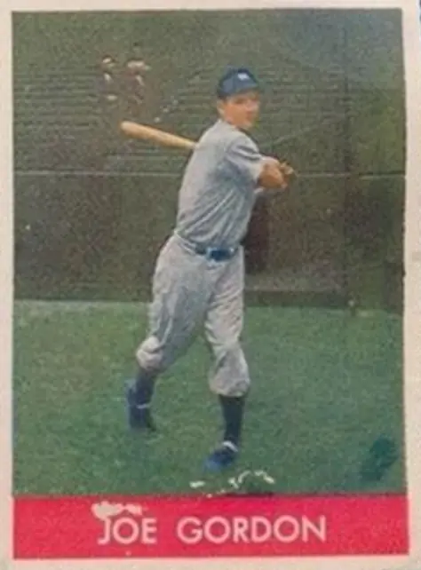

Joe Gordon "Flash"
Career Highlights & Facts
(Facts are AI-generated and may require verification)
- Earned a league Most Valuable Player award while playing second base.
- Performed as a violinist in a symphony orchestra at age 14.
- Provided a welcoming gesture to the first African-American player to join the league by inviting him to play catch.
Would you like to find out more about Joe Gordon?
did not know what to expect as he arrived in Chicago on July 5, 1947. Cleveland Indians owner
Bill Veeck
had just purchased Doby from Newark of the Negro National League for $10,000. This transaction made Doby the first African-American to join the American League, the second in the major leagues in the 20th century, after
Jackie Robinson
joined Brooklyn at the beginning of that season. After meeting with Veeck, Doby made his way to the visiting clubhouse on the first base side at
Comiskey Park
.
Indians’ manager
Lou Boudreau
, who at first thought the signing was a joke, met with Doby and introduced him to his new teammates. While most players were cordial, a few refused to acknowledge Doby or even shake his hand. Doby’s feeling of isolation continued after the team moved to the diamond to warm up before the start of the game. “I felt all alone. When we went out on the field to warm up, to play catch, you know the way we always did, no one asked me to play. I just stood there for minutes. It seemed like a long time,” recalled Doby. “Then Joe Gordon yelled, ‘Hey kid, come on. Throw with me.’ That was it. Joe Gordon was a class guy. He’d been a Yankee and the others looked up to him. So when he reached out to me, it really helped.”
After his first season of playing mostly in the infield, Doby was moved to the outfield. Often when Gordon ran out to the outfield from his second base position to retrieve a throw, he would yell to Doby where to play the next hitter or advise him on the speed of the baserunners. Even though Doby played second base at Newark, Gordon still took the time to explain certain aspects of infield play to him. Gordon took pride in taking many young players under his wing, on and off the field. He never forgot the support and instruction he received when he was a young ballplayer, and wanted to pass that knowledge on to other teammates.
In his 11-year major-league career, Gordon was noted as a smooth fielder and a clutch hitter. He was named the Most Valuable Player in the American League in 1942. After his playing days were over, he achieved some success as a manager but may be better known for his involvement in one of the more bizarre trades in baseball history: one manager for another.
Joseph Lowell Gordon was born on February 18, 1915, in Los Angeles, the second son of Benjamin and Louise Gordon. Ben Gordon, who was a gold miner, fell ill shortly after Joe was born, and the family moved to Oatman, Arizona. Ben died when Joe was 4 years old, and Louise took him and his older brother, Jack, to Portland, Oregon, to live with relatives. Louise did secretarial work to support her family, and at the age of 12, Joe enrolled at Jefferson High School. By his junior year he was playing center field on the varsity team. During the summer he played on a semipro team that won the Oregon state title. In his senior year he played right halfback on the football team, which won the city and state titles and was never scored on. In the spring, he was moved to shortstop from center field on the baseball team and was an All-Portland selection.
Gordon’s talents went beyond the school’s athletic fields. He had a musical gift and at the age of 14 played the violin in the Symphony Orchestra in Portland. “My mother was very musical and I took to it too,” he said.
After high school, Gordon enrolled at the University of Oregon. Weighing only 150 pounds, he played freshman football and was paired with Alphonse “Tuffy” Leemans in the offensive backfield. Leemans transferred to George Washington University, starred for the New York Giants in the National Football League, and was elected to the Pro Football Hall of Fame in 1978.
It was on the baseball diamond that Gordon made his mark, hitting .380 while playing shortstop in 1934. Oregon won the Northwest Conference championship and Gordon was named All-Conference. The next year he hit .415, and Oregon repeated as champion. Gordon was also a member of the men’s gymnastics team. In the major leagues, his play at second base was often described as acrobatic, a result of his gymnastics training.
Gordon, nicknamed “Flash” after his favorite comic book character, played winter ball in Los Angeles in 1936. There, Joe met his future wife, Dorothy Crum.
New York Yankees scout
Bill Essick
signed Gordon to a contract, and in the spring of 1936, Joe reported to the Yankees’ Oakland Oaks farm team in the Pacific Coast League for spring training. Gordon made the team, but was relegated to the bench as the season opened. But early in the year, starting shortstop
Bernie DeViveiros
broke a finger. Gordon was inserted at shortstop, and in 143 games, he hit .300 with 6 home runs and 33 doubles.
Yankees second baseman
Tony Lazzeri
was entering his 12th year as New York opened spring training in St. Petersburg, Florida, in 1937. Lazzeri was showing signs of slowing down. Gordon had arrived at spring training amid much fanfare. Since
Frank Crosetti
had the shortstop position nailed down for New York, Yankees manager
Joe McCarthy
made Gordon a second baseman. Lazzeri knew that the arrival of Gordon would spell his doom with the Yankees and did not want to be a bench player, feeling he had some good years ahead of him. Some players may have ignored the person being groomed to take their job, but that was not Lazzeri’s style. Soon after Gordon got to camp, Tony began showing him the tricks of playing the position, as well as giving him some batting instruction. Lazzeri put it on himself to make sure that Gordon would not fail.
Still, Lazzeri kept his job in 1937. Gordon was sent to the Newark Bears, who easily won the International League with a 109-43 record, 25 1/2 games ahead of second-place Montreal, swept Syracuse and Baltimore in the league playoffs, and bested Columbus of the American Association in the Little World Series, coming back from a three-games-to-none deficit. Gordon hit .280 and smacked 26 home runs for the Bears while batting leadoff. He continued to hone his skills at second base. Newark manager
Oscar Vitt
told McCarthy that Gordon would be the best to play second base, ever.
At the end of the season, the Yankees released Lazzeri and handed the second base job to Gordon. Lazzeri had hit a career-low .244, while an injury to his throwing hand in late August put him on the bench for a few weeks. Gordon stepped into the role in 1938, hitting .255 with 25 home runs and 97 RBIs. His first home run came at
Shibe Park
in Philadelphia off Athletics pitcher
Eddie Smith
on April 26. In early June, Gordon was granted a brief leave to marry Dorothy Crum. They were wed in Elkton, Maryland, on June 4.
The Yankees won the pennant, finishing 9 1/2 games ahead of the Boston Red Sox, and swept the Chicago Cubs in the World Series, becoming the first team to win three consecutive Series. (Cubs first baseman
Ripper Collins
summed up the series this way: “We came, we saw, and we went home”). Gordon hit .400 with one home run and six RBIs. Tony Lazzeri, who had signed with the Cubs after being released by the Yankees, pinch-hit twice in the Series, once grounding out, ironically enough, to Gordon at second base.
After the season Gordon returned to the University of Oregon to complete his requirements for a bachelor’s degree in physical education. In 1992, he was elected to the university’s Hall of Fame.
For the Yankees, the 1939 season went much the same way as 1938 had; the Bronx Bombers bested second-place Boston by 17 games and swept the Cincinnati Reds in the World Series. Gordon started at second base in the All-Star Game, launching a streak of being selected for every All-Star Game from 1939 to 1949, except for 1944 and 1945, when he served in the Army during World War II. Not counting those war years, the only two times he was shut out from All-Star consideration were his rookie year and his final year, 1950. In 1939, Gordon raised his batting average nearly 30 points, to .284, hit 28 home runs, had 111 RBIs and led the league’s second basemen in assists with 461.
The Yankees’ streak of winning the American League pennant ended at four in 1940, as Detroit took the flag, nipping Cleveland by one game and New York by two. Gordon batted .281 with 30 home runs and 103 RBIs. That summer, Joe and Dorothy welcomed their first child, daughter Judith.
Gordon plowed new ground in 1941. Dissatisfied with the play of
Babe Dahlgren
Lou Gehrig’s
successor at first base, the Yankees traded Babe to the Boston Braves of the National League in February and moved Gordon to first base. (It probably didn’t help Dahlgren that he was the subject of rumors that he smoked marijuana. In 1943, Dahlgren voluntarily took a drug test, which was negative.) New York brought up shortstop
Phil Rizzuto
and second baseman
Jerry Priddy
from their Kansas City Blues farm team of the American Association. Under the tutelage of teammate
Johnny Sturm
, Gordon learned to play first base in short order. But Priddy was having troubles at second base and on May 15, after a 13-1 pasting at the hands of the White Sox, he was benched. Gordon moved back to second base (he had played 30 games at first) and Sturm was inserted at first base.
As the season progressed, New York pulled away from the rest of the American League and won the pennant by 17 games, propelled by
Joe DiMaggio’s
record 56-game hitting streak. In the World Series, the Yankees disposed of Brooklyn in five games. Gordon was named outstanding player of the Series after hitting .500, with one home run, five RBIs and seven walks. In an inning that has gone down in baseball lore, the Yankees, trailing 4-3 in Game Four, scored four runs in the top of the ninth inning when, with two out and two strikes on
Tommy Henrich
, Dodgers’ catcher
Mickey Owen
mishandled the third strike on Henrich, who reached first base. A single, two doubles, and a walk later, the Yankees had turned a 4-3 deficit into a 7-4 win. One of the doubles was hit by Gordon, and it drove in the final two runs of the epic rally.
Two months later, the Japanese attacked Pearl Harbor, and the United States was in World War II. In January 1942, President Franklin Delano Roosevelt gave baseball a green light to continue playing, though he emphasized that baseball players would be treated just like other men who were eligible for the draft. It took many months for the nation’s Selective Service machinery to get into full gear, and the draft affected relatively few players in 1942. Gordon, in fact, remained with the Yankees in both 1942 and 1943, missing the 1944 and 1945 seasons in military service.
The Yankees clinched the 1942 American League flag on September 14. From the second game of a July 5 double-header to July 28, the Yankees won 18 of 21 games to pull away from the pack. Gordon walked away with the MVP honors in 1942, after hitting .322 with 18 home runs and 103 RBIs. He had a 29-game hitting streak. But he also led the AL in strikeouts with 95 and grounded into a league-leading 22 double plays. For the second straight year the MVP award eluded the Red Sox’
Ted Williams
, who had won the Triple Crown and led the league in runs scored and walks. (In 1941, DiMaggio’s 56-game hitting streak trumped Williams’s .406 batting average.) After losing out to Gordon in ’42, Williams was sportsmanlike, saying, “I was glad Gordon got it. I really think he kept the Yankees up there.”
The Yankees lost to the St. Louis Cardinals in five games in the World Series, and Gordon collected only two hits and hit .095, with no RBIs. In the ninth inning of Game Five, with the Yankees trailing, 4-2, he was picked off second base by St. Louis catcher
Walker Cooper
, a potential Yankees rally fizzled and the game, and the Series, were over a few minutes later. Cardinals’ manager
Billy Southworth
later said the pickoff was not just a random play, but that Gordon was “the victim of a set play which we had pulled time and again all season in the National League.”
Detroit’s second base star
Charlie Gehringer
, acknowledged as the best keystone sacker in the league during his tenure, joined the United States Navy after the 1942 season. Almost 40, during the season, he had lost his starting job to young
Billy Hitchcock
. For several years, baseball fans had debated who would succeed Gehringer as the king of second basemen. The answer was either Gordon or Boston’s
Bobby Doerr
. On June 11, 1942, in
The Sporting News
, the Red Sox’ and Yankees’ beat writers wrote long articles making the case for the local star. Outside of Boston and New York, Gordon’s flashy defense and power at the plate — as well as the Yankees’ success — seemed to outweigh Doerr’s steady but brilliant play.
The Yankees won the pennant again in 1943, by 13 1/2 games over the Washington Senators, and met St. Louis again in the World Series. This time the Yankees won in five games, exacting some revenge on the Cardinals for their defeat the year before. During the season, Gordon talked of retirement. Joe said he missed his home in Oregon, especially after he and Dorothy welcomed their second child, Joe Jr., before the start of the season. Gordon also said he disliked the train travel and the endless stays in hotels. Most of the New York media did not take Gordon’s comments seriously, and after a while, he dropped the subject.
Gordon, who was a licensed pilot and owned his own airplane, was accepted into the Army Air Force on March 17, 1944. He was stationed mostly in Hawaii and San Diego, and played for the Seventh Air Force team, probably the best service team during World War II. One time, Gordon was flown to Guam to play in a softball game between war correspondents and Navy censors. Gordon, playing for the journalists under the alias of Joe Hollister of the Philadelphia Bulletin, thought it best just to pinch-hit late in the game. Gordon’s cover was blown when he hit the first pitch he saw high and foul over a hill behind the diamond. The game was stopped until the correspondents withdrew their ringer.
In 1945 the heirs of
Col. Jacob Ruppert
, the Yankees’ longtime owner, sold the team for $2.8 million to
Del Webb
Dan Topping
, and
Larry MacPhail
. Under Ruppert, the team was run like a family business whose sole goal was to win. Under the new ownership, the team was run more like a business. In 1946, with the war over, players returned from the service. The Yankees were an aging team, and it showed early as the Red Sox jumped off to a huge lead and won the pennant. The Yankees finished in third place, 17 games out. The season was one to forget for Gordon. Playing in a career-low 112 games, he hit just .210 with 11 home runs and 47 RBIs. He still was named to the All-Star team, mostly on past achievements. Injuries piled up, among them a torn tendon in his left hand, a charley horse, and a bruised thumb. Rumors persisted that Gordon and the fired McCarthy’s successor,
Bill Dickey
, were not getting along. Both strongly denied it. Larry MacPhail, one of the ownership triumvirate and the team’s general manager, feuded with Gordon, accusing him of being out of shape and tanking the season. MacPhail had ordered Dickey to bench Gordon, but Dickey refused, saying he reserved the right to make all decisions concerning the players. (Dickey resigned on September 12, 1946.) Rumors of a trade to Cleveland for manager and star shortstop Lou Boudreau were rampant.
Indeed, Gordon was traded to Cleveland, but for pitcher
Allie Reynolds
, not Boudreau. “I think it’s a good deal,” said Indians’ owner Bill Veeck. “I don’t believe Gordon is through, despite a bad season, and I don’t think Reynolds will ever be a consistently good pitcher.” Boudreau had pushed for the trade. The Indians’ second baseman,
Ray Mack
, although a fine fielder, was not much of an offensive threat. So, the deal was struck. It turned out to be a stroke of genius for New York. Reynolds won 131 games over the next eight seasons as well as seven World Series games. Gordon ended his career in New York playing in 1,000 regular season games and getting exactly 1,000 hits.
Gordon arrived early at Randolph Park in Tucson, Arizona, for 1947 spring training with the Indians. Hall of Famer
Rogers Hornsby
, a hitting instructor in the camp, was holding a hitting school for selected players, including Gordon. Turning to defense, Hornsby said that with the addition of Gordon, Cleveland would have the greatest double play duo in 1947. “There ought to be a law against having two guys like Gordon and Lou Boudreau on the same team,” Bobby Doerr said.
Whether or not Hornsby’s instructions helped, Gordon bounced back in 1947. He hit .272 with 29 round-trippers and 93 RBIs. He and Boston’s Bobby Doerr tied to lead all second basemen in assists with 466. In his first game at
Yankee Stadium
, Gordon showed he was not washed up, as MacPhail had proclaimed, by going 3-for-3 with two walks. He couldn’t resist taking a dig at MacPhail, commenting, “I hope Old Liver Lips was watching that one.” Still, the Indians finished fourth, 17 games behind the pennant-winning Yankees.
In 1948 Gordon had his best season at the plate, stroking 32 home runs, knocking in 124 runs and batting .280. His defense was superb, with 330 putouts and 436 assists. (Larry Doby said that when he first came up to the Indians, “I used to watch Joe and Boudreau in practice and shake my head. These guys must have been using midget shovels or something.”) For most of the season, the pennant race involved four teams. Cleveland and Boston were tied at the end of the season, and the Indians won the pennant in a one-game playoff at
Fenway Park
. Rookie
Gene Bearden
shut down the Red Sox’ powerful hitters, and Boudreau hit two home runs as the Indians wrapped up the 1948 flag with an 8-3 victory.
Behind
Bob Lemon’s
two victories, and the hitting of Doby, Boudreau, and first baseman
Eddie Robinson
, the Indians toppled the Boston Braves in six games in the World Series. In the deciding sixth game, Gordon launched the Indians’ winning rally with a solo home run.
In 1949, the Indians finished in third place with an 89-65 record, eight games off the pace. The team was aging. Gordon’s batting average slipped to .251; he hit 20 home runs and had 84 RBIs. In 1950, the team played almost .600 ball but finished fourth, six games out. By now, Gordon was the only surviving regular infielder from the 1948 world champions. Manager Boudreau played in only 81 games and was released after the season.
Al Rosen
had replaced
Ken Keltner
at third base,
Ray Boone
was the everyday shortstop, and
Luke Easter
was the new first baseman. Boone remarked that it could get confusing playing shortstop at times, saying, “Joe Gordon would signal me to move a step or two toward second base and then I looked into the dugout and see Lou frantically waving me back toward third.”
For Gordon, 1950 was his last season in the major leagues. He played in 119 games, batting .236 with 19 home runs and 57 RBIs. He played only 105 games at second base, giving way to
Bobby Avila
, a future American League batting champion. As Lazzeri had done with Gordon 13 years before, Joe spent a lot of time with Avila. Gordon said of Avila, “That kid knows more about pitchers and batters after two years on the bench than most of the 10-year men in the game.” Avila had equal praise for Gordon. “I pattern myself after number 4, Joe Gordon,” Avila said. “I watch him all the time. He teaches me everything. There was never anybody like Joe Gordon. He helps me all the time.”
Gordon was released after the season. He quickly landed a job as the player-manager of the Sacramento Solons of the Pacific Coast League, a Chicago White Sox affiliate. Ken Keltner and
Al Benton
, former teammates in Cleveland, joined Gordon in Sacramento. The team finished in seventh place in 1951, but Gordon hit .299 and led the PCL in home runs (43) and RBIs (136).
In 1952 the Solons sank to the PCL cellar with a dismal 66-114 record. Gordon’s performance also fell off: .246, 16 home runs, 46 RBIs. He was gone after that season but landed a job as supervisor of West Coast scouting for the Detroit Tigers. Gordon also helped school the Tigers’ young infielders in spring training. In 1956 Joe joined manager
Bucky Harris’
coaching staff in Detroit as the first base coach. In July 1956, he took over as the skipper of the San Francisco Seals of the Pacific Coast League, a Red Sox farm team, and led the team to the league title the next year. In 1958 major-league baseball came to San Francisco. Boston moved its Triple A team to Minneapolis and asked Gordon to stay on. He declined and went to work for the Equitable Life Company selling insurance.
Gordon returned to Cleveland on June 27, 1958, when general manager
Frank Lane
hired him to replace
Bobby Bragan
, fired after only 67 games as manager. Gordon directed the Indians to a 46-40 record for the rest of the season, as they finished fourth, 14 1/2 games behind the first-place Yankees.
In the offseason, Lane sent two of the team’s top relievers,
Ray Narleski
and
Don Mossi
, to Detroit for second baseman
Billy Martin
, and first baseman
Vic Wertz
(and outfielder
Gary Geiger
) to the Red Sox for outfielder
Jimmy Piersall
. Initially, Gordon liked Martin’s aggressive style, but the two were not a good mix, and Gordon often benched Martin, who wound up playing only 67 games at second base. He was lost to the team in early August, when he was struck by a pitch by the Senators’
Tex Clevenger
and fractured his jaw and cheekbone. The Indians were steady all season long, chasing the league-leading Chicago White Sox. On the strength of an eight-game winning streak, the Indians sliced the White Sox’ lead to one game as Chicago came to Cleveland for an important four-game series in late August. The series drew over 165,000 fans to
Cleveland Stadium
, and the White Sox swept the Tribe, virtually knocking the Indians out of the race. Gordon tried to rally the team, but to no avail. To add insult to injury, Chicago clinched the pennant in Cleveland on September 22. The Indians finished in second place, five games back.
By late September, Gordon had grown weary of what he considered Trader Lane’s nitpicking and meddling. On the 18th, while the Indians were in Kansas City, Gordon issued a statement saying, “I would not return to Cleveland as manager next year under any circumstances. … It is obvious that harmony cannot be achieved between Frank Lane and myself.” Two days later, Lane told Gordon he was through managing. When word got out in Cleveland that Gordon was out as manager, angry fans flooded the radio and television stations in protest. More than 700 sent telegrams to Lane alone demanding that Gordon be reinstated. Lane briefly reinstated Gordon, but after the White Sox clinched the title on September 22, Lane fired Gordon again and named pitching coach
Mel Harder
as interim manager. On the morning of September 23, Lane and Gordon met. Later in the day, Lane held a press conference to introduce the new manger, Joe Gordon. “I’ve decided that the best man to replace Joe Gordon was Joe Gordon,” said Lane. “It was just two strong minds in the midst of a hot pennant race. We have ironed out our differences.”
Opening Day 1960 in Cleveland was scheduled for April 19. On Sunday morning, April 17, the
Cleveland Plain Dealer
listed the Opening Day batting order across its front page, complete with pictures. Batting fifth was right fielder
Rocky Colavito
, the reigning home run champion and the face of the Cleveland franchise. The ink on the newspapers was barely dry when Lane changed that, dealing Colavito to Detroit for
Harvey Kuenn
. Kuenn was the American League batting champion in 1959 with a .353 batting average. On Monday, the
Detroit Free Press
headlined its story, “42 home runs for 135 singles.” Cleveland fans were enraged. Not only was Colavito the star of the team, but he put people in the seats. Lane defended his actions by saying that the home run was overrated as a statistic. He noted that the Senators led the league in home runs in 1959, yet finished last. [Actually, the Senators were second in the league in homers.]
Whatever the fan sentiment, Gordon had pushed for the trade. “Kuenn is an all-around player,” Joe said. “He can run, he can throw, and he can shag a fly ball. He’s probably the toughest hitter in the league, and I am glad we got him. I’ll take full responsibility. There hasn’t been a deal that has been made since last September that I didn’t completely approve.” (If that was true, then Gordon must have approved the deal that sent
Norm Cash
from the Indians to Detroit for
Steve Demeter
. Cash had come to Cleveland from the White Sox in December in a multiple-player deal. A week before the Colavito trade, Cash was dealt to the Tigers for Demeter. Cash went on to hit 373 home runs for the Tigers. Demeter was out of baseball after just four games and five at-bats in 1960.)
Cleveland and Detroit were not finished dealing. Lane and Detroit general manager
Bill DeWitt
talked about trading managers. Yes, Gordon for Detroit skipper
Jimmy Dykes
. But the Indians were only a game out of first place at the time, and Lane didn’t want to make the move. However on August 3, 1960, the manager swap was made. The trade was truly bizarre and one that helped neither team. “I’m bringing no magic to Cleveland. If I had any, I would have used it on the Tigers,” said Dykes.
Gordon resigned from the Tigers after the 1960 season to become manager of the Kansas City Athletics. General manager Parke Carroll hired Gordon away from Detroit. Soon after, Carroll was fired and was replaced by Lane, who had been fired in Cleveland. Under Lane, and owner
Charlie Finley
, Gordon did not make it through the whole, year; he was replaced by
Hank Bauer
after a 26-33 record.
Gordon worked as a scout and batting instructor for the expansion Los Angeles Angels from 1962 through 1968. His final job as a manager was back in Kansas City, with the Royals (Charlie Finley had moved the Athletics to Oakland in 1968, but Kansas City got the Royals as an expansion franchise the next year.) Working under a one-year contract, Gordon managed the Royals to fourth place in the AL’s six-team Western Division. Gordon was through after the season and spent 1970 and 1971 scouting for the Royals.
For the era in which he played, Gordon ranked high among second basemen in career home runs (253), games played at the position (1,519), assists (4,706), putouts (3,600), and double plays (1,160).
Gordon spent his retirement selling real estate, hunting, and fishing. He died on April 14, 1978, in Sacramento at the age of 63. A smoker for most of his life, he suffered a heart attack. He weathered that, but then had another. He was survived by his wife, Dorothy, his daughter, Judith, and his son, Joseph Jr.
In 2001, as a celebration of their 100th anniversary, the Cleveland Indians named their 100 greatest players of all time. The players were selected by a panel of baseball writers, executives and historians. Joe was selected as one of nine second basemen to the all-time team.
In 2009, Joe Gordon was inducted into the Baseball Hall of Fame in Cooperstown, New York.
Eig, Jonathan.
Luckiest Man: The Life and Death of Lou Gehrig
. New York: Simon and Schuster, 2005. 256-260, 262-264.
Pluto, Terry.
The Curse of Rocky Colavito
. New York: Simon and Schuster, 1994. 42-46, 59-60.
Spatz, Lyle, editor.
The SABR Baseball List and Record Book
. New York: Scribner, 2007. 288-290.
Stout, Glenn, and Richard A. Johnson.
Yankee Century
. Boston: Houghton Mifflin Company, 2002. 154, 172, 177-179, 195-196, 201.
Votano, Paul.
Tony Lazzeri: A Baseball Biography
. Jefferson: McFarland and Company, 2005. 144-145.
The Sporting News
. Various issues, 1937-1961.
Cleveland Plain Dealer
. Various issues, 1946-1948, 1958-1960.
Cleveland Press
. Various issues, 1946-1948, 1958-1960.
New York Times
. Various issues, 1937-1948, 1958-1959, 1978.
Elyria Chronicle-Telegram
. Various articles, 1959.
http://retrosheet.org/newslt16.htm
http://www.baseball-almanac.com/feats/feats3.shtml
http://cleveland.indians.mlb.com/index.jsp?c_id=cle
http://newyork.yankees.mlb.com/index.jsp?c_id=nyy
http://www.uoregon.edu/athletics/
http://minors.sabrwebs.com/cgi-bin/milb.php
http://vault.sportsillustrated.cnn.com/
Photo Credit
The Topps Company
Full Name
Joseph Lowell Gordon
Born
February 18, 1915 at Los Angeles, CA (USA)
Died
April 14, 1978 at Sacramento, CA (USA)
Stats
Baseball Reference
Retrosheet
Hall of Fame
Most Valuable Player
Managers
Scouts
Career Totals
| WAR | AB | H | HR | BA | R | RBI | SB | OBP | SLG | OPS | OPS+ |
|---|---|---|---|---|---|---|---|---|---|---|---|
| 55.6 | 5707 | 1530 | 253 | .268 | 914 | 975 | 89 | .357 | .466 | .822 | 120 |
Statistics via Baseball-Reference.com
The Original Clue